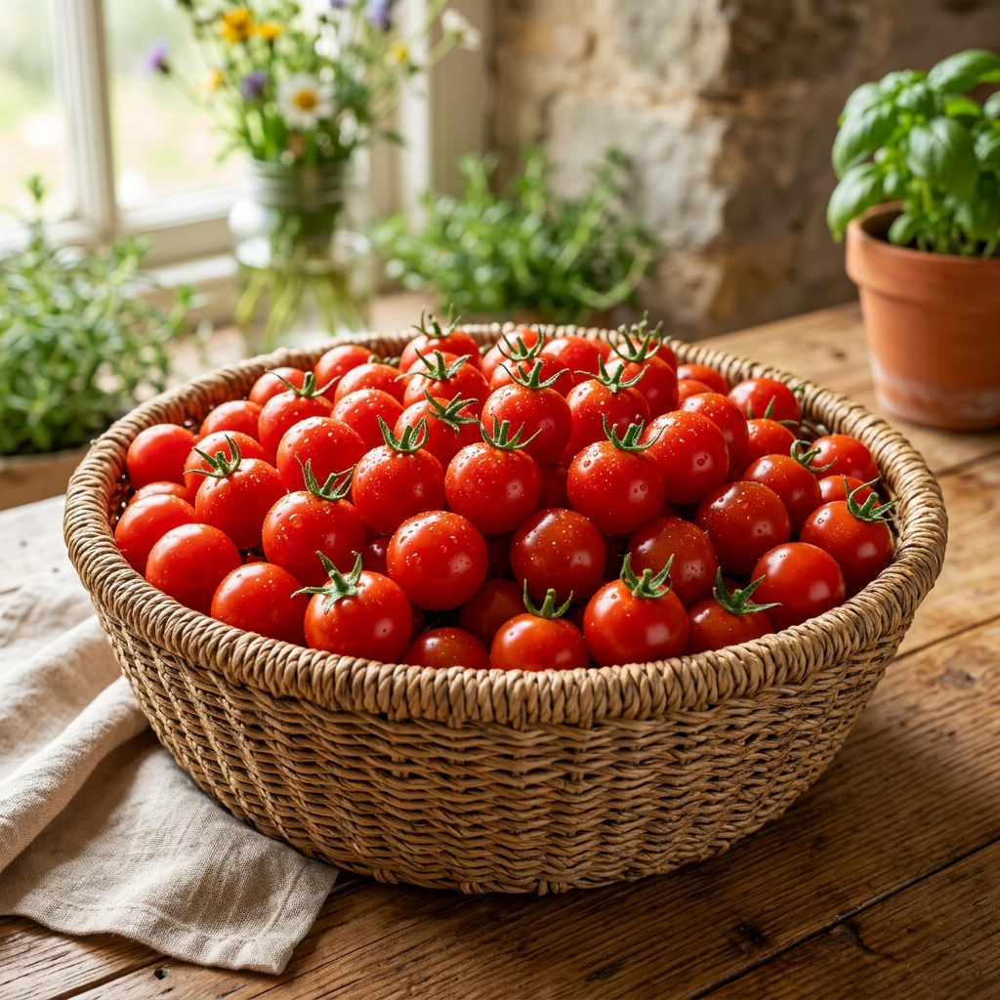

「トマトが苦手だった子どもが自ら進んで食べた」「家族で取り合いになった」など、全国から驚きと喜びの声を多数いただいています。奥松農園のフルーツトマトは、これまでのトマトの常識を覆す味わいです。

徹底した水分管理と独自のデータ制御により、トマト本来の甘さを極限まで引き出しています。一つひとつ丁寧に育て、最も味が乗った最高のタイミングで収穫する、自然の力を活かしたこだわりの栽培方法です。

「本当に美味しいトマトを、全国の食卓へ届けたい」。
その真っ直ぐな想いだけで、私たちは日々トマト栽培に向き合っています。大切な家族に食べさせたいと思える、最高品質のトマトだけを厳選してお送りします。
リピーターが続出しています！
「甘くてびっくりしました！まるでフルーツみたいで、トマト嫌いの息子がパクパク食べています。」
東京都 30代 女性
「毎朝のサラダが楽しみになりました。もうスーパーのトマトには戻れません。また買います！」
大阪府 40代 男性
「実家への贈り物に選びましたが、今まで食べた中で一番美味しいと大絶賛でした。」
福岡県 20代 女性
品質管理を徹底し、JGAP認証基準に則った農場運営を行っています。お子様からご年配の方まで、安心して毎日食べていただける品質だけをお約束します。

大切な方へのギフトとしても大変喜ばれています。
高級感のある専用パッケージに、宝石のように輝くトマトを傷一つつけないよう丁寧に梱包してお届けします。

「本当に美味しい状態」を見極めて収穫するため、1日の収穫量には限りがございます。そのため、申し訳ありませんが数量限定での販売とさせていただいております。
お早めのご注文をおすすめいたします。